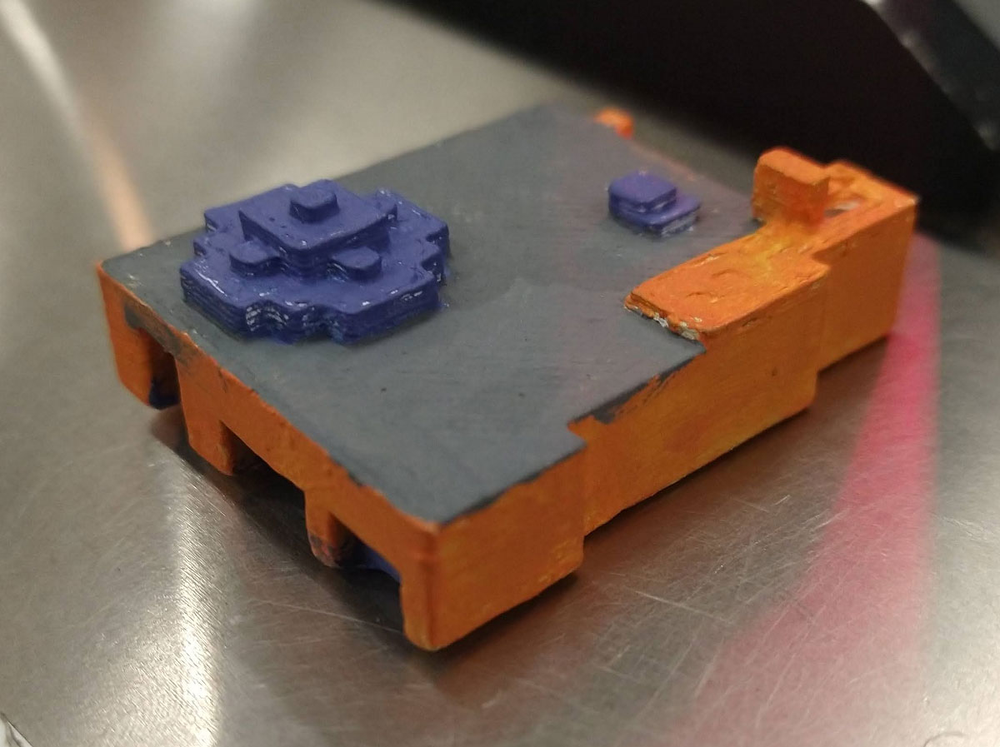

Mini Tech Museum

This is a 3D printed version of the Tech Museum of Innovation in San Jose. I created the model in Minecraft, then I exported the world into Mineways, then I exported it again into Flashpoint. I then exported it once again into a file format for 3D printers and printed it out. I then painted the model to resemble the actual building. Originally made for my Intro to Digital Media Art class in Spring 2024.